Distribución de Elementos en
Pantalla
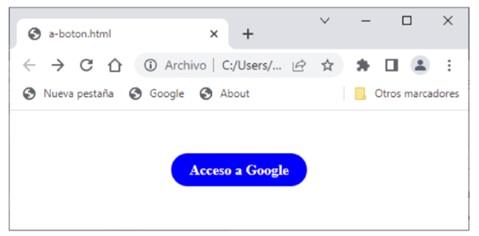
La particularidad de este enlace es que, al poner el ratón sobre él, su color cambia a verde y al pulsarlo pasa a ser rojo. El código es el siguiente:
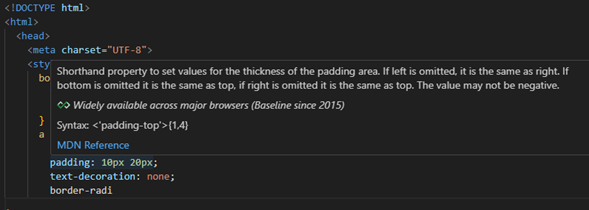

Como puede observar, dentro del cuerpo del documento HTML solo hay un hipervínculo (etiqueta a), cuyo enlace muestra el texto “Acceso a Google”. En la cabecera se especifican los estilos, tanto del cuerpo como del hipervínculo.
La regla de estilo del cuerpo se utiliza para centrar el hipervínculo en la ventana del navegador (la propiedad text-align toma el valor center). Además, se crea un margen interno de separación de 50 píxeles (propiedad padding) para separarlo de los bordes de la pantalla.
Podría pensar que sería mejor utilizar la propiedad margin en la regla de estilo del hipervínculo, en vez de padding en la del cuerpo del documento. Sin embargo, como descubrirá en el próximo capítulo, esta propiedad no se tiene en cuenta en los elementos que se muestran en línea (como este). En dicho capítulo aprenderá a subsanar este inconveniente de la forma más adecuada.
El hipervínculo tiene una serie de propiedades cuyo valor es el mismo independientemente del estado en el que se encuentre, motivo por el
que la regla vinculada a esta etiqueta establece que: • El color del texto del enlace sea blanco (propiedad color). • El grosor del margen interno, aquel que se rellenará con el color de fondo, sea de 10 píxeles arriba y abajo, y de 20 píxeles a derecha e izquierda (valores de la propiedad padding). • Por defecto, el texto de los hipervínculos aparece subrayado. Para evitarlo, se asigna el valor none a la propiedad text- decoration. • Con el fin de que el enlace sea estéticamente más agradable, se redondean las esquinas 20 píxeles con la propiedad border- radius. La parte interesante es aquella en la que se definen los estilos del hipervínculo en cada estado, para lo que se utilizan pseudoclases en los selectores de las reglas correspondientes. En ese sentido, tanto si se hubiera pulsado en alguna ocasión como si no, se quiere que su color de fondo sea azul, motivo por el que la regla de estilo asociado a dichos estados (link y visited) asigna el valor blue a la propiedad background-color. Observe que, para no repetir la regla, en su selector se han combinado las pseudoclases que representan ambos estados. Las dos últimas reglas hacen algo similar, ya que asignan un color de fondo verde al hipervínculo cuando el ratón se sitúa encima o rojo cuando se pulsa (estados hover y active, respectivamente). Solo queda abrir esta página en Chrome y comprobar que el aspecto del hipervínculo es el esperado en todos los estados.
3.6 Listas
Como sabe, una lista es una enumeración de elementos. Por defecto, aparecen de forma descendente precedidos por un pequeño círculo (listas desordenadas) o un numero (listas ordenadas). En esta sección aprenderá a sustituir estos marcadores por algunos de los muchos que ofrece CSS de forma predeterminada o, incluso, por imágenes personalizadas. Naturalmente, además de las propiedades específicas de las listas, podrá utilizar otras de tipo genérico, como las que permiten asignar colores de tinta o de fondo, tanto a la lista como a sus elementos, crear bordes, márgenes, etc. En esta sección estudiará las siguientes propiedades, relacionadas con rasgos visuales específicos de las listas: • list-style-type. Determina el tipo de marcador que precede cada elemento de la lista. • list-style-image. Sustituye el marcador por un icono. • list-style-position. Establece la posición del marcador o la imagen respecto del elemento. Como se acaba de comentar, los elementos de una lista van precedidos de un marcador que, por defecto, es un pequeño círculo negro en las desordenadas o un número en las ordenadas. Con la propiedad list- style-type podrá sustituirlo por cualquier otro diferente. Algunos de los marcadores proporcionados por CSS para las listas desordenadas son: • disc. Círculo relleno. Es el valor por defecto. • circle. Círculo sin rellenar. • square. Cuadrado. • Los marcadores de las listas ordenadas se pueden agrupar en dos clases: • Numéricos. Los más utilizados son los que ofrecen una numeración decimal (valor por defecto) o la romana
Para conocer todos los valores posibles de esta propiedad, visite la página:
https://developer.mozilla.org/es/docs/Web/CSS/list-style-type

Este sería el aspecto exhibido por dicha lista:

Sustituya la etiqueta ul por esta otra: Ahora, la lista pasaría a ser ordenada y sus marcadores seguirían una numeración romana, tal como puede ver en esta otra imagen:

Puede que los marcadores que proporciona HTML por defecto le resulten aburridos y quiera tener los suyos propios. En ese caso, la
propiedad list-style-image le permite utilizar un icono personalizado. Su valor debe seguir el formato:
Modifique de nuevo la etiqueta con la que se creaba la lista desordenada en el código anterior para incluir un icono en forma de aspa almacenado en el archivo “marcador-lista.ico” (localizado en la carpeta “imagenes”):

Este cambio provoca el resultado mostrado a continuación:

Al igual que el favicon, dicho icono ha sido desarrollado con el editor online https://www.favicon.cc/. En cualquier caso, podrá utilizar cualquier imagen de pequeño tamaño.
Como es habitual, tanto estas propiedades como las anteriores también pueden tomar el valor inherit (heredan el valor asignado en el contenedor donde esté incluida la etiqueta) o initial (la propiedad vuelve a tomar el valor por defecto).
Este nuevo código de ejemplo demuestra el efecto producido por dichos valores en una lista:

Como puede observar, en el cuerpo del documento solo hay una lista desordenada, cuyos elementos le resultarán familiares. En este caso, ninguna de las etiquetas hace uso del atributo style, ya que su aspecto se determina con las dos reglas de estilo creadas en la cabecera del documento, una para la propia lista (selector “ul”) y otra para sus elementos (selector “li”). Empecemos analizando la correspondiente a la lista. En la primera declaración de esta regla de estilo se asigna el valor circle a la propiedad list-style-type para que el marcador de sus elementos sea un círculo sin rellenar. Este quedará fuera del espacio reservado a dichos elementos, ya que la propiedad list- style-position toma el valor outside. El color de fondo de la lista será verde claro (la propiedad background-color toma el valor lightgreen). Como la propiedad width toma el valor fit- content, su ancho se ajustará al de su contenido, es decir, al del elemento más largo. Por último, la propiedad padding crea un margen interno de 10 píxeles. La combinación de las tres propiedades anteriores servirá para enmarcar el espacio ocupado por la lista (recuerde que este adquiere el color de fondo). La regla de estilo de los elementos de la lista establece que su color de fondo sea amarillo claro (la propiedad background-color toma el valor lightyellow). Asimismo, con las propiedades padding y margin se crea un margen interno de 5 píxeles y otro externo de 10 píxeles que enmarca los elementos y los separa entre sí. Además, como el color de fondo de la lista es diferente al de los elementos, se delimita claramente el espacio ocupado por esta y el de cada uno de ellos. El resultado de cargar este código en Chrome muestra a continuación:
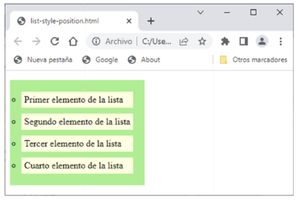
Como puede apreciar, los marcadores no forman parte de los elementos. Cambie el valor de la propiedad list-style-position por inside. Tal como puede ver en esta otra imagen, ahora los marcadores quedan incorporarlos a dichos elementos:
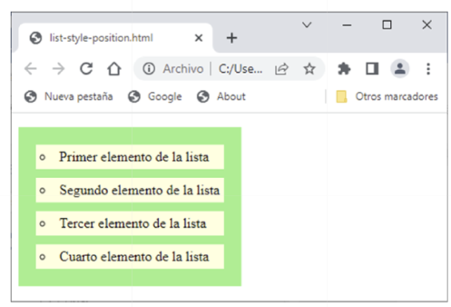
Si va a necesitar utilizar varias de las propiedades que acaba de estudiar, se recomienda usar list-style, que agrupa a las tres. Esta propiedad toma tres valores, separados por espacios, en el siguiente orden:
List style: Tipo de posición de imagen
En consecuencia, las dos declaraciones que formaban parte de la regla de estilo vinculada a la lista en el código anterior:
List style tipe: circle
List style position: outside;
Se podrían sustituir por esta otra:
List style: circle outside
3.7 IMÁGENES
Las imágenes son una parte fundamental de cualquier página web. Sin embargo, la etiqueta img solo permite modificar su tamaño mediante los atributos width y height, algo claramente insuficiente a la hora de mostrarlas de una forma creativa. Con el fin de ampliar las posibilidades de presentación de este importante recurso informativo, CSS proporciona una serie de propiedades con las que, además de modificar el ancho y el alto de la imagen, podrá especificar su opacidad, la forma de los bordes o, incluso, convertirla en un fondo de pantalla. Veamos en detalle cada una de ellas, ya que serán las que hagan posible darle nuestro toque personal. 3.7.1 Dimensiones Como sabe, los atributos width y height de la etiqueta img permiten escalar el tamaño de una imagen. Eso mismo también lo podrá hacer con las propiedades CSS del mismo nombre. Aunque el resultado producido sea idéntico, obtendrá las ventajas que supone el uso de reglas de estilo.
En este primer código de ejemplo se utilizan ambas propiedades para que la imagen de la Fontana de Trevi (almacenada en el archivo “fontana-di-trevi. jpg”, dentro de la carpeta “Imagenes”) ocupe el 50% del ancho de la pantalla del navegador:
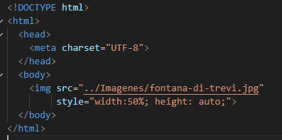
Observe que la propiedad height toma el valor auto. Esto hace que su altura mantenga las proporciones de la imagen y no se deforme.
Aunque en este caso el uso de la propiedad height es opcional, se recomienda utilizarla.
En la imagen mostrada a continuación se puede comprobar que la foto ocupa exactamente la mitad del ancho de la pantalla, independientemente del tamaño de la ventana del navegador.
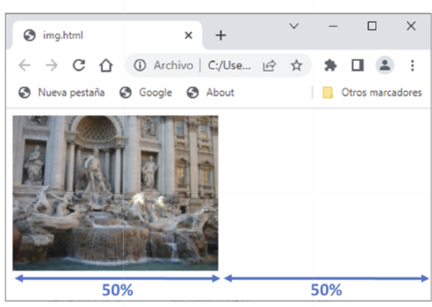
3.7.2 Transparencia
La transparencia determina el grado de opacidad de un elemento. Se establece con la propiedad opacity, que toma un valor decimal comprendido entre 0 (la imagen no se ve porque es completamente transparente) y 1 (su aspecto es el original). Aunque la imagen no se vea, esta seguirá ocupando su espacio (aparecerá vacío).
Recuerde que, en el caso de los colores, la transparencia se consigue con el parámetro alpha.
Si no quiere que una imagen siga ocupando espacio en la página cuando desaparezca, asigne el valor none a la propiedad display (la estudiará en el siguiente capítulo).
A continuación, se puede ver el Coliseo con un grado de transparencia de 1, 0.8, 0.6, 0.4, 0.2 y 0:
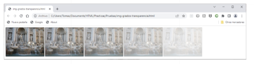
Advierta que la última imagen no se ve (solo está el hueco que ocupa). Para dar una utilidad práctica a esta nueva propiedad, le propongo desarrollar un código en el que la imagen del Coliseo sea un hipervínculo. Esta se verá semitransparente hasta que sitúe el ratón sobre ella y la pulse para acceder a la web oficial de este importante monumento romano. Con el propósito de hacer más interesante este ejercicio, dicha imagen formará parte de una composición que simule un efecto de una foto polaroid, tal como puede ver a continuación:
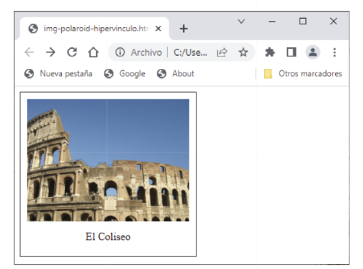
El código de documento HTML utilizado es el siguiente:
DOCTIPE HTML
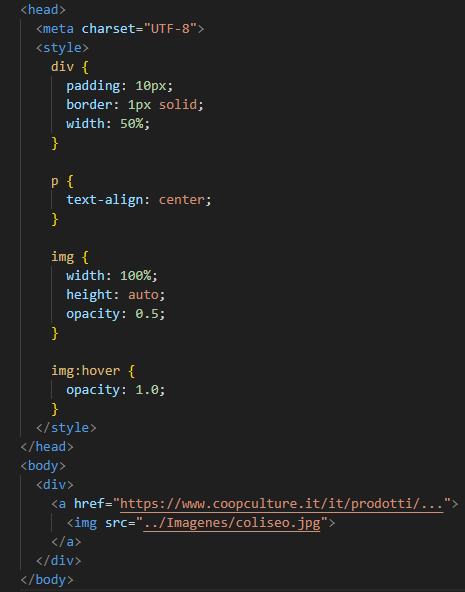
Observe que el cuerpo del documento solo contiene un contenedor div que representa el papel fotográfico sobre el que se muestra la imagen y el texto. Dicho contenedor incorpora la etiqueta img y un párrafo con un texto descriptivo. La regla de estilo asociada al contenedor div define las propiedades del “papel” fotográfico sobre el que se imprime la imagen y el texto. En primer lugar, establece que su tamaño sea la mitad del ancho de la pantalla (la propiedad width toma el valor 50%). También crea un margen interno de 10 píxeles (propiedad padding) para separar la imagen y el texto de los bordes del “papel”, que se dibujan con una línea continua de 1 píxel de grosor (propiedad border). La regla de estilo del párrafo centra el texto en el papel fotográfico (asigna el valor center a la propiedad text-align). El bloque de declaraciones de la regla de estilo que afecta a la imagen ajusta su ancho al del contenedor (el valor de la propiedad width es 100%) y la hace semitransparente (el valor de la propiedad opacity es 0.5). La última regla de estilo utiliza la pseudoclase hover para restituir el aspecto original de la imagen al poner el ratón sobre ella (se asigna el valor 1 a la propiedad opacity). Cargue la página y compruebe que se produce el efecto manifestado a continuación, donde se ve la imagen del Coliseo antes y después de situar encima el ratón.
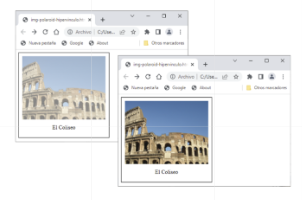
3.7.3 Bordes
Hasta ahora, las imágenes se mostraban en un área rectangular. Si quiere añadirle un toque artístico, la propiedad border-radius permite recortar sus esquinas de forma redondeada para obtener diferentes efectos, tal como evidencia el siguiente código HTML:
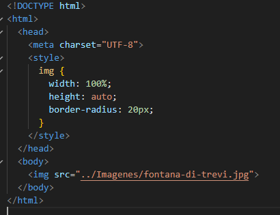
En el cuerpo del mensaje únicamente se incluye la etiqueta img con la que se muestra la Fontana de Trevi. En la cabecera del documento hay una regla de estilo que afecta a dicha etiqueta, cuya primera declaración hace que el ancho de la imagen coincida con el de la ventana del navegador (el valor de la propiedad width es 100%). Para asegurar que la imagen no se deforme, se asigna el valor auto a la propiedad height (no es imprescindible). Por último, la propiedad border-radius toma un valor de 20 píxeles, que es el tamaño del radio con el que se dibuja el arco con el que se redondean las esquinas.
El resultado se puede ver a continuación:
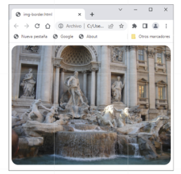
Ahora, asigne el valor 50% a la propiedad border-radius: Como puede apreciar en la siguiente imagen, este sencillo cambio produce un resultado espectacular:
3.7.4 Fondo de pantalla Si quiere que una imagen sea el fondo de pantalla de una página, no utilice la etiqueta img sino la propiedad background-image de la etiqueta body cuyo valor deberá seguir el siguiente formato: url(URL o ruta de acceso a la imagen) El siguiente código muestra la forma de usar esta nueva propiedad:
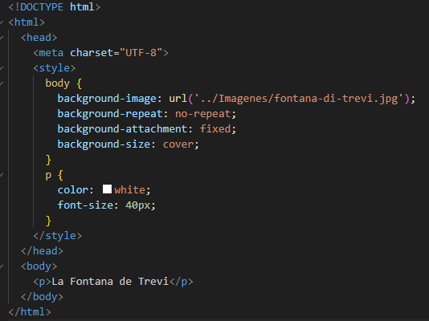
En el cuerpo del mensaje solo hay un párrafo (etiqueta p) con el texto: “La Fontana de Trevi”. Este se escribirá en la página como si no hubiera ninguna imagen de fondo. Para hacerlo más visible, la regla de estilo asociada a esta etiqueta establece un color de tinta blanco y un tamaño de 40 píxeles (propiedades color y text-size). La otra regla de estilo afecta al propio cuerpo del documento HTML (selector “body”). La primera declaración especifica la ruta de acceso al archivo donde se almacena la imagen de fondo mediante la propiedad background-image.

Si en vez de una imagen quisiera un color de fondo, recuerde que dispone de la propiedad background-color. Solo tendría que asociarla al cuerpo del documento (etiqueta body) y asignarle el color que quiera. Sustituya la regla de estilo del cuerpo del documento HTML anterior por esta otra:
Ahora, el resultado sería el siguiente:

3.8 SOMBRAS
Todos los elementos HTML que se muestran en una página web son susceptibles de tener una sombra. Esta podrá aplicarse al espacio ocupado por dicho elemento o, si fuera un texto, el de las letras que lo componen. En el primer caso se utiliza la propiedad box-shadow y en el segundo text-sadow. Veamos la sintaxis de estas propiedades y los efectos que se pueden llegar a producir, empezando por la primera. Tal como se acaba de comentar, la propiedad box-shadow afecta al espacio ocupado por el elemento. Su valor puede ser none (por defecto, no se muestra ninguna sombra), además de los consabidos initial e inherit. Sin embargo, este habitualmente es se compone de los siguientes parámetros:
offset_horizontal offset_vertical difuminado radio_de_extensión color
Si se añadiera inset al final de la lista de parámetros anterior, la sombra aparecería por dentro en vez de por fuera.
Los parámetros offset_horizontal y offset_vertical son los únicos obligatorios y establecen el desplazamiento de la sombra en cada dirección por debajo del elemento. La siguiente imagen los muestra gráficamente:

Si el valor del offset horizontal fuera negativo, la sombra aparecería a la izquierda. En el caso de ser el vertical, lo haría por arriba. El parámetro difuminado determina el grado de desvanecimiento de la sombra. Cuanto mayor sea, más difuminada estará. El parámetro radio_de_extensión fija el tamaño de la sombra. Cuanto más positivo sea, mayor será el área que ocupe. Si, por el contrario, dicho valor fuera negativo, su superficie sería menor. El parámetro color especifica el color de la sombra.
Para ver el efecto obtenido al añadir una sombra a un encabezado, escriba el siguiente código HTML:

En el cuerpo del documento solo hay un encabezado h1, cuyo aspecto se define en una regla de estilo cuyas primeras declaraciones son auxiliares (no afectan a la sombra). Son las que establecen un margen interno de 10 píxeles y otro externo de 20 píxeles (propiedades padding y margin), un color de fondo azul claro (propiedad background-color) y un ancho ajustado al del propio texto (la propiedad width toma el valor fit-content). La propiedad box- shadow con la que se muestra la sombra, objeto de estudio de esta sección, la pinta de color gris con un desplazamiento tanto horizontal
como vertical de 5 píxeles (no se ha difuminado ni se ha ampliado o reducido su radio de expansión). A continuación, puede ver el resultado obtenido al cargar este código en Chrome:

Cambie el signo de los parámetros de offset: Ahora la sombra aparece sobre la parte superior izquierda del encabezado, tal como puede observar en esta otra imagen:

Por último, aumente el radio de expansión de la sombra: Su aspecto pasará a ser el mostrado a continuación:

Le animo a que pruebe diferentes combinaciones para tratar de descubrir aquellas que se acercan más a sus gustos. Los elementos HTML no son los únicos capaces de proyectar una sombra. Las letras de los textos también pueden hacerlo. Para ello, deberá utilizar la propiedad text-shadow, cuyo valor sigue la siguiente sintaxis: La propiedad text-shadow también puede tomar los valores none (por defecto, no se proyecta ninguna sombra), initial e inherit. Como puede comprobar, esta propiedad tiene los mismos parámetros que la anterior, salvo difuminado. Y, al igual que aquella, los únicos requeridos son los de offset-horizontal y offset_vertical. Para probar el efecto producido por esta propiedad se utilizará el siguiente documento HTML:

El cuerpo del mensaje consta de dos encabezados h1, cuyo identificador (atributo id) será el selector de la regla de estilo con la que les dé el efecto deseado. En la cabecera del documento están las reglas de estilo, la primera de la cuales afecta a los dos encabezados h1. Su función es auxiliar, ya que se utiliza para separarlos 20 píxeles (propiedad margin) y dejar espacio a las sombras.
La regla de estilo del primer encabezado (selector “sombra”) proyecta una sombra de color gris claro desplazada 5 píxeles a la derecha y por debajo de cada letra. La del segundo (selector “neon”) juega con los parámetros de la propiedad text-shadow para ofrecer un efecto de letras de neón de color rojo. Para conseguirlo, la sombra no se desplaza (el offset horizontal y vertical es 0), pero se amplía con un radio de difusión de 4 píxeles. El resultado de ambos efectos se puede ver a continuación:

Con el fin de obtener resultados más llamativos, la propiedad text- shadow permite combinar varias sombras. Solo tiene que separarlas por comas, como se ha hecho en estas dos reglas de estilo:

La primera regla crea un efecto de halo mediante tres sombras: una negra, otra roja y una tercera con un tono más oscuro. Sus offsets son los mismos (1 píxel en horizontal y otro en vertical), por lo que el efecto deseado se consigue modificando el radio de extensión de cada una de ellas, que se resalta aún más al usar un texto de color blanco (propiedad color). La segunda regla dibuja un borde negro alrededor de cada letra, que destaca sobre un texto de color claro (propiedad color). A la hora de pintarlo, la propiedad text-shadow combina cuatro sombras en las que los offsets van tomando los valores 0, -1 y 1 de forma alternativa. Sustituya las reglas de estilo del documento de ejemplo anterior por estas últimas. Luego, modifique los identificadores de los encabezados h1 para que coincidan con los utilizados en dichas reglas:

Una vez guardados los cambios, refresque la página en el navegador. El resultado obtenido deberá ser similar al siguiente:

Le animo a realizar todas las combinaciones de parámetros y valores que se le ocurran. Los efectos que se pueden llegar a producir son realmente sorprendentes. 3.9 VALORES POR DEFECTO Y HEREDADOS En las secciones anteriores se han descrito las propiedades que se emplean con más frecuencia para determinar el aspecto de los elementos mostrados en una página web. Cada una de ellas podía tomar un conjunto de valores, entre los que generalmente se encontraban los siguientes: • initial. Restablece el valor por defecto. • inherit. Utiliza el valor heredado del contenedor al que pertenece. Cuando se añade una etiqueta al cuerpo de un documento HTML, esta se muestra en la ventana del navegador de una forma predeterminada. Al asignar un valor a cualquiera de sus propiedades, lo que está haciendo es modificar dicho aspecto. Si en algún momento quisiera volver a recuperarlo, no tendría por qué conocer cuál era, ya que bastaría con asignarle el valor initial. Si, por el contrario, lo que
deseara es utilizar el heredado del contenedor donde se encuentra, el valor que debería asignarle es inherit. El siguiente código muestra un sencillo, pero representativo, ejemplo de uso de este valor:


A continuación, se muestra el aspecto de esta página:

Analicemos el código de este documento HTML para descubrir el motivo del color y el tamaño adoptado por cada uno de los párrafos. En la cabecera se definen dos estilos: uno para los párrafos y otro para los contenedores. El de los párrafos establece un tamaño de fuente de 30 píxeles y un color de texto gris claro (propiedades font-size y color), mientras que el de los contenedores determina únicamente un tamaño de fuente de 20 píxeles. El cuerpo del documento está formado por cuatro párrafos, dos de los cuales están dentro de un contenedor div. El primer párrafo se muestra tal como se ha establecido en la cabecera (con un tamaño de 30 píxeles y un color de texto gris claro). El segundo párrafo, aunque está dentro del contenedor, sigue el mismo estilo. El tercer párrafo hereda del contenedor el tamaño de la fuente (se ha asignado a la propiedad font-size el valor inherit), que es de solo 20 píxeles, motivo por el que se muestra más pequeño. El color sigue siendo el del estilo especificado para los párrafos en la cabecera del documento. El último párrafo, que no está dentro del contenedor, restituye el color por defecto de los párrafos (la propiedad color toma el valor
initial), motivo por el que aparece en negro. El tamaño de la fuente sigue siendo el establecido en la regla de estilo, es decir, de 30 píxeles.
En los capítulos anteriores se han estudiado los principales elementos HTML y las propiedades que determinaban su aspecto. En los ejercicios desarrollados durante su descripción, estos se mostraban de forma aislada o en combinaciones sencillas cuya ubicación venía determinada por el propio navegador. Pero, cualquier página, por muy sencilla que sea, está formada por múltiples elementos que se agrupan en secciones según un diseño gráfico más o menos complejo. Si hasta ahora el encargado de situarlos en pantalla era el navegador, a partir de ahora será usted quien decida la posición ocupada por cada uno de ellos. Para conseguirlo, tendrá que aprender a utilizar un conjunto específico de propiedades. La primera de ellas (display) le permitirá especificar de forma explícita el modo de presentación de un elemento HTML, que podrá ser uno de los que el navegador asigna por defecto u otro de caja flexible. Todos los elementos HTML tienen asociado por defecto uno de los siguientes modos de presentación: • En bloque. Los elementos ocupan todo el ancho de la pantalla y, por lo tanto, se muestran unos debajo de los otros. • En línea. Los elementos solo ocupan el espacio que necesitan, por lo que se sitúan unos al lado de los otros (mientras haya hueco).
Estos dos modos son los más sencillos y utilizados. Pero, cuando el diseño lo requiera, el modo de caja flexible ofrece formas más variadas y creativas de reparto del espacio de la página. Además de los modos de presentación anteriores, con la propiedad float también tendrá la posibilidad de hacer que los elementos queden desplazados hacia uno u otro lado de la página (o el contenedor en el que se encuentren) y mantengan su posición, aunque cambie el tamaño de la ventana del navegador. Esto permite realizar diseños en los que ciertos elementos (los que usted quiera) siempre estén situados a la izquierda o la derecha de la pantalla en una posición determinada, lo que proporciona cierta estructura a la página. Si en los anteriores modos de distribución se establecían las reglas de reparto general del espacio entre todos los elementos, mediante las propiedades position (en combinación con top, bottom, le y right) será capaz de ubicarlos de forma individual en una posición absoluta o relativa. Asimismo, podrá decidir si quiere que dichos elementos se muevan con el resto del contenido de la página al hacer scroll o permanezcan inmutables. Para finalizar este capítulo, se ha incluido una sección de carácter práctico en la que se muestran diversas alternativas de distribución horizontal y vertical del espacio disponible en una página web. Este mismo ejercicio se hará también dentro de un contenedor, con el fin de demostrar lo sencillo que resulta realizar diseños gráficos más elaborados.
4.1 MODOS DE PRESENTACIÓN
Como se acaba de comentar en la introducción de este capítulo, el navegador asigna a cada etiqueta un modo de presentación por
defecto. En concreto, las descritas en esta obra se distribuyen de la siguiente forma: • Modo bloque. Los elementos HTML que tienen este modo de presentación por defecto comienzan en una nueva línea y ocupan todo el ancho disponible de la pantalla. Entre ellos están los encabezados y los párrafos (etiquetas h1 a h6 y p), las listas (ul, ol y li), algunas de las etiquetas de citas (blockquote y address) o los contenedores (div, head,nav, section, article, aside, y footer). • Modo línea. A diferencia de los elementos anteriores, estos no requieren comenzar en una nueva línea y solo ocupan el espacio necesario para mostrar su contenido. Las etiquetas que conoce de este tipo son las de formato de textos (b, strong, i, ins, u, del, em, mark, small, sub o sup), algunas de citas (q, cite y abbr), los hipervínculos (etiqueta a) o las imágenes (etiqueta img). Para cambiar el modo de presentación por defecto de una etiqueta, deberá utilizar la propiedad display, que puede tomar los siguientes valores: • block. El elemento se muestra en bloque. • inline. El elemento se muestra en línea. • inline-block. Igual que inline, pero respetando los valores de las propiedades width y height. • flex. El elemento se distribuye en modo de caja flexible, con mayores posibilidades de ordenación de elementos que los modos anteriores. • none. Hace invisible un elemento HTML, que deja de ocupar espacio en la página.
Si quiere conocer el resto de valores que puede tomar la propiedad display, los encontrará en la página https://developer.mozilla.org/es/docs/Web/CSS/display.
Veamos en detalle la forma en la que se distribuyen los elementos en la ventana del navegador (o en el contenedor donde se encuentren) según cada uno de estos valores. 4.1.1 Modos en bloque y en línea Todos los elementos HTML de una página web tienen asociado un modo de presentación por defecto, por lo que el valor de su propiedad display será block o inline de forma predeterminada. El siguiente código HTML expone claramente estos dos modos de presentación:

El cuerpo del documento se compone de dos párrafos y dos imágenes. Estas últimas se muestran con un tamaño del 25% de la pantalla (propiedad width). Como cabía esperar, los párrafos se han mostrado uno debajo de otro (en bloque), mientras que las imágenes lo hacen una al lado de la otra (en línea).

Si quiere intercambiar el comportamiento de párrafos e imágenes, sustituya el código del cuerpo del documento HTML anterior por este otro:

En esta ocasión, tanto los párrafos como las imágenes hacen uso de la propiedad display para que los primeros se muestren en línea (valor inline) y las segundas en bloque (block). El resultado es ahora el siguiente:

Como se puede apreciar, los párrafos se escriben uno a continuación del otro con un punto y seguido (en vez de un punto y aparte). En cambio, las imágenes aparecen una debajo de la otra (en vez de al lado). Sin embargo, cuando se asigna el valor inline se producen dos efectos colaterales que pueden dar resultados inesperados: • Se ignora el valor de las propiedades width y height. • Los márgenes externos no provocan la separación esperada con otros elementos (propiedad margin) a lo alto. Para comprobarlo, imagine que quiere escribir un texto a varias columnas, como se hace en revistas y periódicos. Una posible alternativa sería utilizar distintos párrafos distribuidos en línea, con un ancho limitado al de la columna. El código sería algo así:

El cuerpo de este documento se compone de tres párrafos, en cuya regla de estilo se establece un ancho de 200 píxeles (propiedad width) y un modo de presentación en línea (se asigna el valor inline a la propiedad display), con el fin de que el texto se muestre en columnas de dicho tamaño dispuestas una al lado de la otra. Sin embargo, el resultado que puede ver a continuación no se parece en nada a lo que se pretendía conseguir:

El motivo es porque el navegador ha ignorado el valor asignado a la propiedad width. La forma de resolver este problema es sustituir el valor inline de la propiedad display por in-line-block. Esta otra imagen prueba que ahora los párrafos tienen el ancho especificado y, en consecuencia, el texto se reparte en columnas.

En los periódicos, las columnas tienen varios párrafos por columna. Para conseguir este efecto, cree tantos contenedores como columnas quiera tener y asígneles las propiedades de estilo anteriores. Luego, incluya dentro de cada uno de ellos los párrafos que quiera que pertenezcan a la misma columna.
Antes de finalizar esta sección debe saber que, independientemente del modo de presentación utilizado, el navegador añade un margen en los lados superior, derecho e izquierdo. Incluso, los elementos en línea dejan un espacio de separación entre ellos (aunque establezca un margen de 0 píxeles de forma explícita). Es importante que tenga en cuenta este espacio extra cuando su diseño gráfico contemple que los elementos ocupen el 100% de la ventana del navegador. Esos pocos píxeles adicionales harán que, por ejemplo, dos imágenes cuya propiedad width tome el valor 50% se muestren una debajo de la otra, en vez de al lado. El siguiente código HTML permite comprobarlo:

A la vista de este código podría pensar que el navegador mostraría dos imágenes que ocupan todo el ancho de la pantalla (cada una de ellas la mitad). Sin embargo, y de forma inesperada, verá que una aparece debajo de la otra.

Esto contradice el hecho de que las imágenes se muestran por defecto en línea. ¿Qué ha sucedido? Que el navegador separa por defecto las imágenes 4 píxeles, por lo que la segunda no cabe a lo ancho y se desplaza hacia abajo. La forma de resolver el problema sería, por ejemplo, asignar a la segunda imagen un ancho menor del 50%. ¿Cuál sería el ancho máximo que podría tener? El 50% menos los 4 píxeles de separación. Para hacer ese sencillo cálculo, HTML ofrece la función:
Calc (expresión oritmetico)
La expresión aritmética puede ser una suma, una resta, una multiplicación o una división (operadores ‘+’, ‘-‘, ‘*’ y ‘/’).
Entre los operadores y los operandos debe haber siempre un espacio de separación.
Sustituya la etiqueta de la segunda imagen del código anterior por esta otra:

Refresque la pantalla del navegador y observe que esta vez ambas imágenes se muestran horizontalmente.

Si observa con detalle la imagen, el borde superior del Coliseo está más abajo que el de la Fontana de Trevi. Eso es porque la imagen es 4
píxeles más pequeña. Si no le gustara el efecto que produce, quite 2 píxeles de ancho a ambas imágenes, en vez de 4 a una de ellas. Para finalizar esta sección, se va a analizar el código de un documento HTML en el que se expone un caso frecuente donde los elementos de una lista se distribuyen horizontalmente (por defecto, lo hacen en vertical) para convertirlos en la barra de navegación de una página web. A continuación, se muestra el resultado que se pretende obtener: